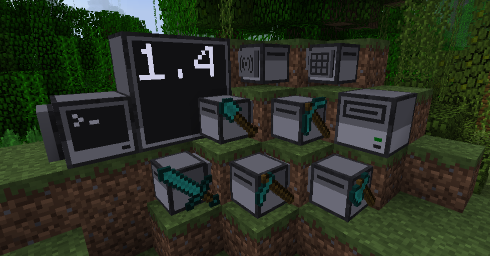

DnD-Kobold Clint-Platformer
A Hack&Slash, Megaman-Zero inspired platformer on Godot!
ComputerCraft projects

A repo of my lua scripts, meant for use in CC:tweaked.
Cat Cafe
A chill, cat adopting, coffee serving game on Godot!
This website!
Well, it's still a work in progress after all.